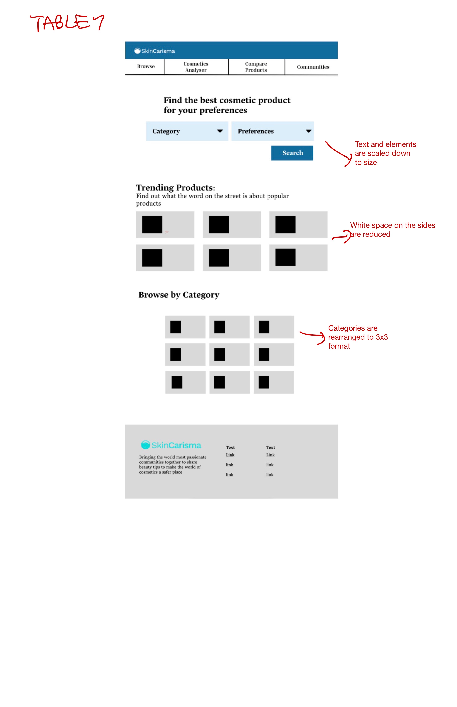

1. About
The task of the project was to redesign an existing webpage which involed:
- Identifying accessibility issues
- Creating a series of sketches and subsequent mockups
- Implementing those changes by the creation of a new website
- Integrating responsive elements into the design architecture
2. Why I chose this website
I'm deeply passionate about the cosmetics industry and safe practices because of my sensitive skin.
This is one of the essential tools that can be used to filter for safe products but it is not easy to navigate I want to fix that
I've also started a premium natural deodorant business and I've left a clue of its name in the reviews portion of the website XD
SkinCarisma's Original Website
3. Initial website problems
- The website has a low contrast color scheme making text hard to read
- There is no alt text making it difficult for automated page readers used by the visually handicapped
- The hero page is complicated and it takes a while to figure out what tool the site offers
- The page uses unhelpful headers that don't describe what each section does
- The pictures are not updated and are empty creating a poor visual experience
4. Sketches
4.1 Initial Sketches
4.2 Finalized Sketch
5. Low Fidelity Wire-frames
5.1 Desktop Low Fidelity Mockup
5.2 Tablet Low Fidelity Mockup

5.3 Phone Low Fidelity Mockup
6. Style guide
7. High Fidelity Mockup
7.1 Desktop High Fidelity Mockup
7.2 Tablet High Fidelity Mockup
7.3 Phone High Fidelity Mockup
8. Final Website
SkinCarisma's New Website